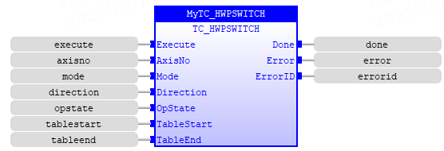
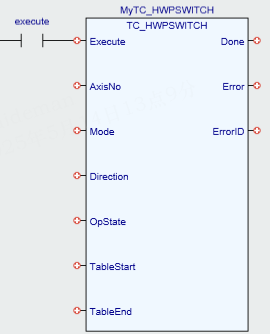

Motion Function.
The HW_PSWITCH command is used to control an output based on a position. It can either turn on the output when the start position is reached, and turn the output off when the next position is reached.
The output is a 24V output linked to the axis.
HW_PSWITCH outputs are assigned to the axes in a fixed way with one output per axis. See note 1.
The positions are defined as a sequence in the TABLE memory in range from table_start to table_end. On execution of the HW_PSWITCH command the positions are stored in a FIFO (first in – first out) queue.
There are 512 positions in the FIFO in all products that support HW_PSWITCH except in the MC664/MC464 Flexaxis module which has 256.
MC664 built-in axis supports 512 positions in the FIFO buffer.
This command is applicable only to Flexible axes with ATYPEs that use incremental encoders, stepper or quadrature outputs.
When using a step direction output or encoder output ATYPE the positions do not take into account the 16 times multiplier. This means that you should enter your positions as ‘position * 16’.
The command can be used with either 1 or 5 parameters. Only 1 parameter is needed to disable the switch or clear FIFO queue. All five parameters are needed to enable the switch.
After loading the FIFO and going through the sequence of positions in it, if the same sequence has to be executed again, the FIFO must be cleared before executing another HW_PSWITCH command with the same parameters.
|
Execute : BOOL; |
Rising edge requests execution |
|
|
Axis : USINT; |
Axis number |
|
|
Mode : USINT; |
0 |
Disable switch |
|
1 |
Toggles Digital Output at specified positions which are loaded into the HW FIFO. |
|
|
2 |
Clear FIFO |
|
|
Direction : USINT; |
0 |
MPOS decreasing |
|
1 |
MPOS increasing. |
|
|
OpState : BOOL; |
Output state to set in the first position in the FIFO; ON or OFF. |
|
|
TableStart : LREAL; |
Starting TABLE address of the sequence. |
|
|
TableEnd : LREAL; |
Ending TABLE address of the sequence. |
|
|
Done : BOOL; |
TRUE when function has completed normally |
|
Error : BOOL; |
TRUE if a program error is detected |
|
ErrorID : UINT; |
Returned error number |
When the execute input changes from FALSE to TRUE (rising edge), the function block runs the command and attempts to load the table sequence into the fifo queue, and the output indicates the corresponding setting state.
When the sequence length stored in the table is greater than the length limit in FIFO, the error output is set and the error id number 19 is returned.
For the Error ID reference, see the Trio Programming error list.
MyTC_HWPSWITCH(Execute:= (BOOL), AxisNo:= (USINT), Mode:= (USINT), Direction:= (USINT), OpState:= (BOOL), TableStart:= (LREAL), TableEnd:= (LREAL));
Done:= MyTC_HWPSWITCH.Done;
Error:= MyTC_HWPSWITCH.Error;
ErrorID:= MyTC_HWPSWITCH.ErrorID;


Not available.
TrioBasic Error List